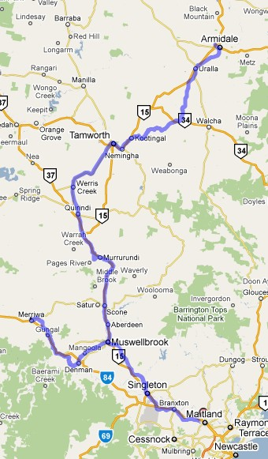

New South Wales - NSW North West Route
(version 1.0)
Route design by Chris Nelson and Brian Bere-Streeter
Overview
Version 1: East Maitland to Armidale & Muswellbrook to Merriwa
The NSW-NW route covers a vast area of north-western NSW. There is a total of 753 miles (1205 km) of main line track in this route.
This version contains the following completed lines:
- Main North: East Maitland to Armidale (238 miles);
- Merriwa Branch: Muswellbrook to Merriwa (51 miles).
Other unfinished lines are in place within the route; in some sections some scenery has been placed, but no interactives are placed on these sections: these will be completed in future versions. Much trackage is unscenicked and the "edge of the world" will be visible from the train in some locations.
- Barraba Branch: West Tamworth to Barraba (61 miles);
- Mungindi Line: Werris Creek to Moree (157 miles);
- Dubbo Line: Werris Creek to Binnaway (84 miles);
- Gwabegar Line: Gulgong to Gwabegar (162 miles);
- a short section of the North Coast Line from Maitland to just north of Telarah;
- A short section of the South Maitland Railways from Maitland to just west of Mount Dee.
Although the route contains some sections such as Farley, East Greta and Mount Dee, Telarah, Maitland, High Street and East Maitland that are duplicated in the "Coals to Newcastle" route by Peter Newell, these sections have been included in this route for "comparative completeness" at the southern end of the route. This allows for any Activities along the Main North line to have associated AI traffic running on the Coal Lines to/from the SMR lines, or associated AI traffic running to/from the Main North Coast line.
